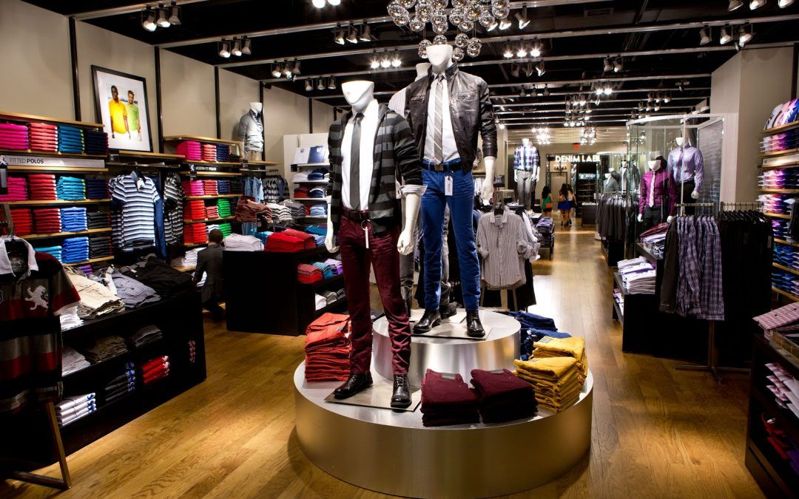

Descubre cómo Estilos mejoró su gestión de ventas y la experiencia de sus clientes con nuestro chatbot empresarial.
Estilos es una boutique en Lima especializada en moda contemporánea y accesorios únicos. Con más de 10 años en el mercado, ofrece productos de alta calidad, desde ropa casual hasta accesorios elegantes, para quienes buscan destacar con estilo.
Antes de implementar nuestra solución, Estilos enfrentaba los siguientes problemas:
Se implementó un chatbot personalizado que permitió:
En las ventas en línea gracias a la automatización del proceso de pedidos.
En el tiempo de respuesta a consultas de clientes.
En la experiencia del cliente debido a recomendaciones personalizadas.